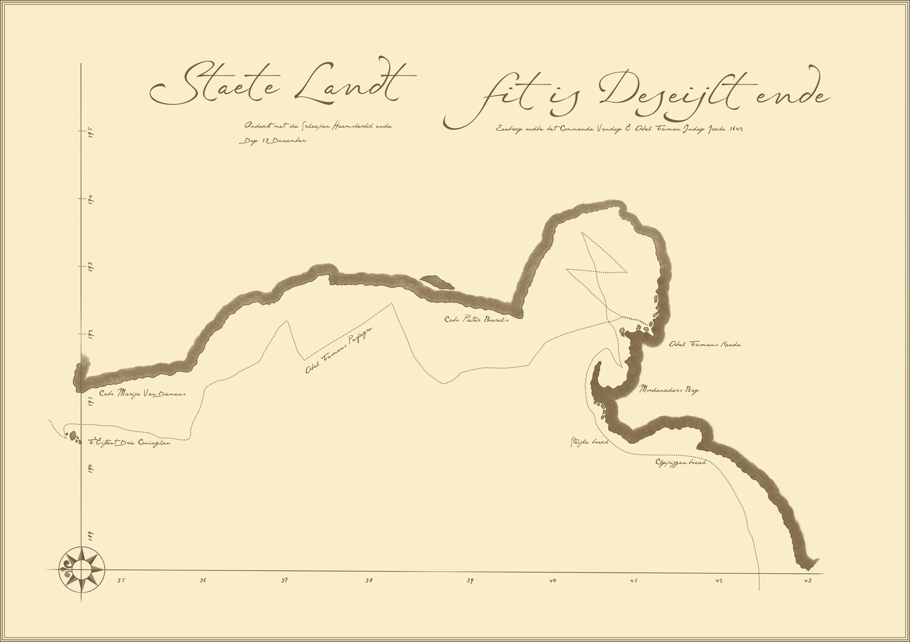

The first known European to discover Aotearoa / New Zealand was a Dutchman named Abel Tasman — and the story of how it went is one of the most wonderfully chaotic accidents in the history of exploration.
The mission
Abel Tasman set sail from Zeeland, a Dutch province. His mission was to seek out the land that must exist on the other side of the world. It has been established that the world is round and that everything on it worked in balance — so for Europe to exist, there had to be land mass on the other side to stop it tipping over. Australia was what he was looking for.
He sailed round the Cape of Good Hope and across the bottom of the Indian Ocean, finding an island that would later be named after him — Tasmania. He continued east until, on 13 December 1642, he sighted land just south of Cape Foulwind, near Westport.
· · ·
Golden Bay, 1642
Sailing north along the coast, Tasman rounded Farewell Spit and into a beautiful bay. He saw some locals and — being Dutch and therefore friendly — decided to be social. He organised seven volunteers to go and find out what the locals were like.
As the sailors made their way to shore, they heard the conch shell being blown. In Māori tradition, this is the first stage of determining a visitor's intentions — and if replied to, it signals that a fight will follow. The Dutch, hearing what sounded like a fanfare, did exactly what Europeans do with fanfares: they picked up their trumpets and responded in kind.
The Māori thought the fight was on — so they jumped into their wakanui and paddled out to the landing boat.
The Dutch, watching the approaching canoes, thought things didn't look good. A sailor picked up his musket, aimed, steadied, fired — and missed. That convinced the Māori it was absolutely on. They charged the landing boat and killed four of the sailors. The landing party made a rapid retreat.
Hence the bay was named Murderers Bay. Fortunately it got a much nicer name — Golden Bay — many years later, which is far more fitting of the location.
· · ·
The mapping
Tasman set sail northward as fast as he could, mapping the west coast of both islands as he went — accidentally making them look like one. He thought New Zealand was a single island. He also managed to map Taranaki completely out of existence (have a look at a map of the North Island — it's a fairly major part of the west coast!). And because he thought we were attached to South America, he named us Staete Landt — an older name for South America.
In Tasman's Defence
At this time, longitude had not been discovered yet — only latitude. He was only accurately measuring north and south. East and west at sea took considerably longer to work out.
The one-island mistake is also forgivable — he was probably in quite a hurry leaving Nelson.
He also missed Australia in both directions — and Australia is only the biggest island in the world, nearly the size of Western Europe. To be fair, the Dutch had already found it in 1606 but thought it was just a series of small islands.
Before reaching the Three Kings Islands, north west off Cape Reinga, he spotted a few Māori and — having learned his lesson — decided not to visit. He continued on to discover Tonga and Fiji, then sailed between New Guinea and Australia to the Spice Islands (Indonesia).
I love this story, because of all the mistakes he made, it makes the art of exploring the world look like an act of pure chance.
Tasman's original map, 1642

Tap to enlarge — Staete Landt, as mapped by Abel Tasman, 13 December 1642
· · ·
6 October 1769
It took another 100 years for Europeans to be sighted in these waters. Nicholas Young, on board the Endeavour, yelled "Land ahoy!" — and Captain James Cook named that headland Young Nick's Head, a name it still bears today.
Cook's original mission was to track the path of Venus across the South Pacific. Once complete, he went exploring — and discovered New Zealand from the east coast, not the west, proving beyond doubt that we were not attached to South America.
▸ Cook spent 6 months mapping the New Zealand coastline
▸ He was aided by two Tahitian interpreters, which helped encounters with Māori go considerably better than Tasman's
▸ He returned to England reporting a land of great resources and a people that could be traded with
· · ·
1790s onwards
Europeans started arriving around the 1790s. The first settlers were seal hunters who had little impact on everyday Māori life — except for their massacre of the kekeno (New Zealand fur seal). The 1800s brought the whale hunters and the beginnings of true European settlement.
The Second Sons
New Zealand was never colonised by convicts (we made sure they all went to Australia). New Zealand was settled by the 'second sons'.
While the influencing group to arrive were those traditionally second in line to family fortunes, many also arrived looking for a fresh start free of class structure and to make their own fortunes. They sailed here — a three-month journey — arrived, saw nothing but bush and hills, and got on with it.
With no way back, the only option was to make a living — and they did. That's where the Kiwi 'get in and get the job done' attitude comes from. And those first settlers needed the Māori to help them get established — that's where the multicultural attitude really started. Although when you talk to a few locals they might tell you otherwise.
Key moments in our history are outlined in the Journey Through Time section.